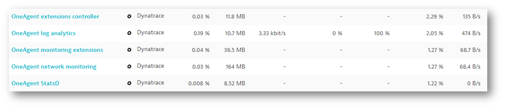
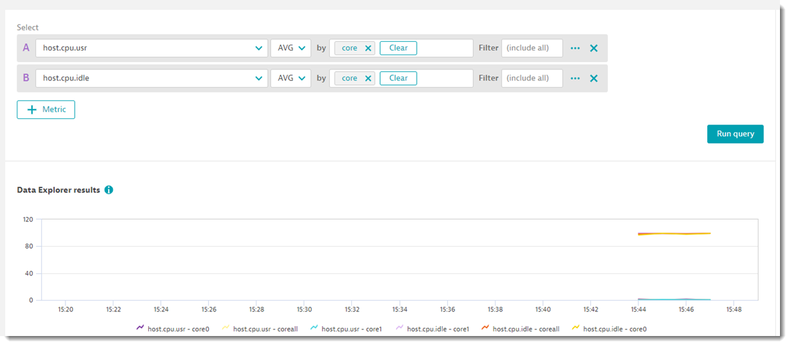
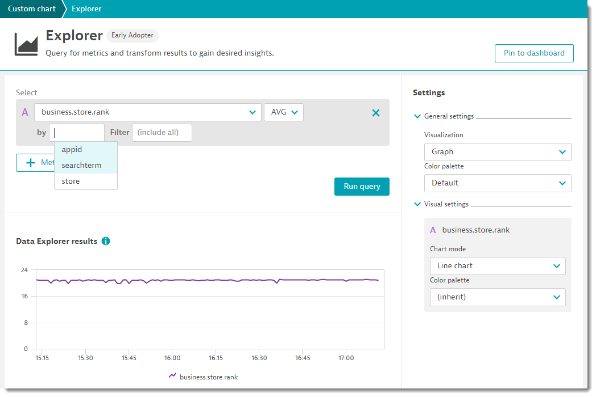

This repository contains the exercises for the Metric Ingestion.
Prerequisites
- A cloud compute instance from GCP/Azure/AWS/Alicloud/Tencent Cloud
- PuTTy/Terminal/web-based terminal from the cloud providers
What You'll Learn
- How to use the new metric ingestion interface via command line, API, telegraf
- How to slice and dice the metric via the new Explorer
- Setting alerts and monitoring strategy
dynatrace_ingest command line
- SSH into yesterday's DevOps EC2 instance or use any cloud compute instance of your choice
- ssh dynatrace@1-2-3-4.nip.io
- password: secr3t
- As part of agent 1.201 there is a new command tool available called dynatrace_ingest located in the following directory:
/opt/dynatrace/oneagent/agent/tools. This provides the capability to PIPE in metrics. - Execute the
dynatrace_ingestcommand:
You will get a response:$ /opt/dynatrace/oneagent/agent/tools/dynatrace_ingest -vdynatrace_ingest disabled in tenant configuration, will not validate metrics.- Login to Bootcamp Managed Cluster
- userid: your email address
- Enable OneAgent: Settings > Monitored technologies > Supported technologies> Dynatrace OneAgent StatsD, Pipe, HTTP Metric API

- You will see additional Dynatrace processes started 
- Execute the
dynatrace_ingesthelp command:bash
$ /opt/dynatrace/oneagent/agent/tools/dynatrace_ingest -h
And you will now see a response like this:
Usage: dynatrace_ingest [Options] [Metrics]
When metrics are ommitted, dynatrace_ingest expects them to be passed via standard input. Each line is treated as one metric ...
...
Ingesting your first set of metrics
- Clone the repo + setup the environment:
bash
$ git clone https://github.com/Dynatrace-APAC/Workshop-mint.git
$ cd Workshop-mint
$ ./setupEnvironment.sh
Hit:1 http://ap-southeast-1.ec2.archive.ubuntu.com/ubuntu focal InRelease
Get:2 http://ap-southeast-1.ec2.archive.ubuntu.com/ubuntu focal-updates InRelease [111 kB]
Get:3 http://ap-southeast-1.ec2.archive.ubuntu.com/ubuntu focal-backports InRelease [98.3 kB]
...
./telegraf-1.16.0/var/log/
./telegraf-1.16.0/var/log/telegraf/
$
If you look into thesetupEnvironment.sh, you will see that the script does 3 things 1. Installsysstat2. Installtelegraf3. Setup thetelegraf.conffile - Execute the scriptcpuUsagePerCore.shbash
$ cd ~/Workshop-mint
$ ./cpuUsagePerCore.sh
Sending metric: host.cpu.usr,core=coreall 3.05
Sending metric succedded
Sending metric: host.cpu.idle,core=coreall 96.45
Sending metric succedded
Sending metric: host.cpu.usr,core=core0 0.00
Sending metric succedded
Sending metric: host.cpu.idle,core=core0 100.00
Sending metric succedded
Sending metric: host.cpu.usr,core=core1 6.06
Sending metric succedded
Sending metric: host.cpu.idle,core=core1 92.93
Sending metric succedded
...
If you look into the script cpuUsagePerCore.sh, it loops through the command mpstat and piping the output to /opt/dynatrace/oneagent/agent/tools/dynatrace_ingest -v. We create two metrics host.cpu.usr and host.cpu.idle each split by the individual cpu core.
Exploring the metric
If we If we go to the new metrics Explorer we can find our metrics

Setting up the script
- Edit the file
playstore.pyand input the Token and Tenant URL- YOUR_DT_API_URL = Copy from your own browser
Examplehttps://mou612.managed-sprint.dynalabs.io/e/8325964d-f0ea-4c20-824b-6969f1ba11cc
- YOUR_DT_API_TOKEN = Copy from Dynatrace->Settings->DynatraceAPI
$ cd ~/Workshop-mint
$ vi playstore.py
or
$ nano playstore.py
- Save the file
Deploying script and validating
- Deploy cronjob
bash
$ (echo "* * * * 2 python3 /home/dynatrace/Workshop-mint/playstore.py > /tmp/playstore.log") | crontab -
- Validate cronjob runningbash
$ cat /tmp/playstore.log
business.store.rank,store=playstore,appid=at.smartlab.tshop,searchterm="pos" 19
business.store.rank,store=playstore,appid=at.smartlab.tshop,searchterm="point of sale" 10
business.store.rank,store=playstore,appid=at.smartlab.tshop,searchterm="kasse" 3
business.store.rank,store=playstore,appid=at.smartlab.tshop,searchterm="restaurant pos" 23
business.store.rank,store=playstore,appid=at.smartlab.tshop,searchterm="invoice print" 50
business.store.rank,store=playstore,appid=at.smartlab.tshop,searchterm="cashier" 25
business.store.rank,store=playstore,appid=at.smartlab.tshop,searchterm="Cash Register" 16
{"linesOk":7,"linesInvalid":0,"error":null}
If you look into the script playstore.py, it activates /api/v2/metrics/ingest and uses the same "schema-less" format and collects information from the query parameter of https://play.google.com/store/search?q= and spilts it according to the various searchterm
Data ingestion format
business.store.rank,store=playstore,appid=" + YOUR_APP_ID + ",searchterm=\"" + kw + "\" " + str(checkAppPosition(YOUR_APP_ID, kw)) + "\n"
Where to get telegraf from
- Github URL: https://github.com/influxdata/telegraf
- Installation
- how to use
- Full documentation
- 4 distinct plugin types:
- Input Plugins collect metrics from the system, services, or 3rd party APIs
- Processor Plugins transform, decorate, and/or filter metrics
- Aggregator Plugins create aggregate metrics (e.g. mean, min, max, quantiles, etc.)
- Output Plugins write metrics to various destinations
- Dynatrace output plugin
Setup
- Part of the setupEnvironment.sh script already downloaded and installed Telegraf, you will find it in
/opt/telegraf - The configuration file was already modified to add the Dynatrace output
$ vi /etc/telegraf/telegraf.conf
Search for dynatrace
###############################################################################
# OUTPUT PLUGINS #
###############################################################################
# Configuration for sending metrics to InfluxDB
[[outputs.dynatrace]]
prefix = "telegraf."
Starting Telegraf
- Navigate to
/opt/telegraf/usr/binand execute./telegraf
$ cd /opt/telegraf/usr/bin
$ ./telegraf
2020-10-19T09:05:40Z I! Starting Telegraf
2020-10-19T09:05:40Z I! Using config file: /etc/telegraf/telegraf.conf
2020-10-19T09:05:40Z I! Loaded inputs: cpu disk diskio kernel mem processes swap system
2020-10-19T09:05:40Z I! Loaded aggregators:
2020-10-19T09:05:40Z I! Loaded processors:
2020-10-19T09:05:40Z I! Loaded outputs: dynatrace
2020-10-19T09:05:40Z I! Tags enabled: host=ip-172-31-9-86
2020-10-19T09:05:40Z I! [agent] Config: Interval:10s, Quiet:false, Hostname:"ip-172-31-9-86", Flush Interval:10s
2020-10-19T09:05:40Z I! [outputs.dynatrace] Dynatrace URL is empty, defaulting to OneAgent metrics interface
Exploring the Metrics
Navigate to the metrics Explorer and search for telegraf

Full documentation can be found here
An example of how to query, filter, etc.

Let's explore the metrics we ingested via the API!

Important to know
- Default query provides rollup of 120 data points in specified time frame, using metric‘s default time aggregation
- Rollup is allways performed, even if not explicitly applied
- Default query "groups" all dimensions, using metric's default space aggregation
Go to Settings -> Anomaly detection -> Custom events for alerting

- Search for the metric you want to alert, for example
business.store.rank

- Abilty to select dimensions/filter is powerful!

- Set the Monitoring stratgy
StaticorAuto-adaptive baseline

- Complete the event descrption and click on
create

Associate a metric to any entitiy in Dynatrace
- Use service as an example:
simplenodeservice - Use bookstore
Trigger an incident
- Test
We hope you enjoyed this lab and found it useful. We would love your feedback!